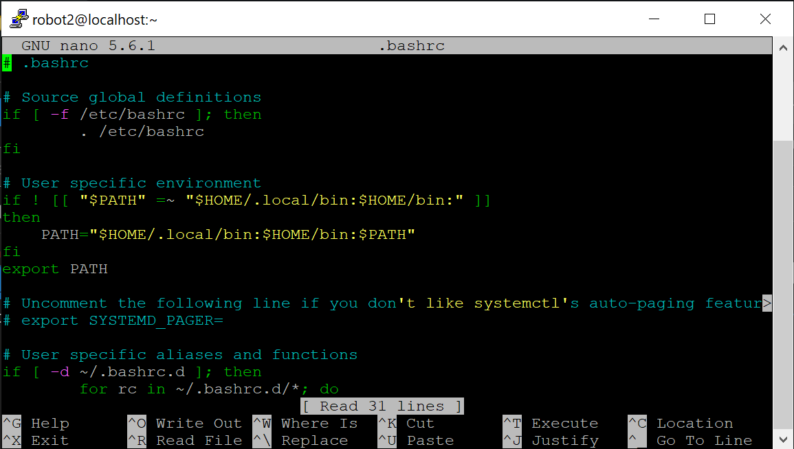

Linux Introduction#
Linux is an operating system deployed on our Lorenz server, like other OS, you can have your personal setting, writing codes, training AI, do many things as you want.
However, unlike Windows or MacOS, the graphical user interface is not a part of Linux, that means all things are done by command!
For example, if you want to delete a file in Windows, just select that file, right click and press delete button, but if you want to do this in Linux, you have to type in your command like rm /path/to/file
In the below section, I’ll briefly explain what your should know as a novice to Linux
Linux Basic Command#
Command can be executed in many ways, but for now I’ll introduce only one way - terminal, the interface you see when you log in Lorenz server
What you have to do is, type in commands you want and press Enter!
cd & pwd#
pwd is shorthand for “print work directory”
pwd
cd is shorthand for “change directory”
cd /path/to/folder
if omit the dirName, it will by default move to your home directory
cd
ls#
ls is shorthand for “ list directory contents”
ls
if giving some arguments, for example -a, can list hidden files
ls -a
top#
top can monitor all user activities with interactive interface
top
If only specific user is concerned,
top -u $username
nano & vim#
nano and vim are both editor, nano is more simple, and vim provides many advanced functionality, which to use depends on you
nano [filename]
vim [filename]
mkdir#
mkdir is shorthand for “make directory”
mkdir /path/to/folder
mv#
mv is shorthand for “move file”
mv /old/path/to/file /new/path/to/file
cp#
cp is shorthand for “copy file”
cp /path/to/file_original /path/to/file_copy
rm#
rm is shorthand for “remove file”
rm /path/to/file
if you want to remove folder and all files within it
rm -r /path/to/folder
man & help#
man and help are both manuals for command, if you want to know a command thoroughly
man some_command
help some_command
Linux Basic Command (Optional)#
screen#
TODO tmux replace
screen create new screen/terminal, allows user to do many things at the same time
screen
if you want to switch(detact) to original terminal
press Ctrl + A, then press D
if you want to reconnect to screen (if only one screen)
screen -r
Note
Require linuxbrew to use screen, you can simply put below into your .bashrc
eval “\((/home/linuxbrew/.linuxbrew/bin/brew shellenv)" export PATH="/home/linuxbrew/.linuxbrew/opt/dpkg/bin:\)PATH”
and then do below in your terminal
source .bashrc
Done! Now you can use screen!
kill#
kill can terminate any process, with given PID
kill <PID>
Note
Sometimes, some process (especially python) may not terminate successfully, and become zombie process that takes up a lot of memory. Please make sure all your process terminated as expected, you can check this by top or lsof
bash#
For python, we can execute a series of command like this
python Hello_World.py
Just like above, we can execute a series of commands in linux
bash Hello_World.sh
Linux NOT Basic Command#
I’ll not go into these command, just let you know
git
cdo
ncdump
and else
Linux User Setting#
You can type in below code to see what’s in your current directory, the exact meaning of this command will discuss later on.
ls -a
You’ll see files like
.bashrc
.bash_profile
.zshrc

These are your user setting, but in an unfriendly way.
Now, let’s have a look on .bashrc! Type in below code
nano .bashrc
You should be able to see things like this (no need to be exactly the same, but should be similar)  It is OK if you don’t know what these command exactly means, just have to know that what this code does is copy-pasting other peoples’ user setting.